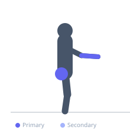
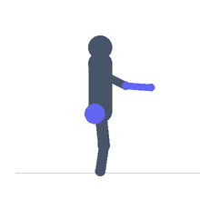

Exercise guide / Sledgehammer Lever (Forearm Levering)
Sledgehammer Lever (Forearm Levering)
The sledgehammer lever involves holding a sledgehammer at the very end of its handle with one hand extended and slowly lowering it forward or to the side from a vertical position, then raising it back — using wrist and forearm strength to control the extreme lever arm. The long handle creates significant torque on the forearm even with a lightweight hammer, making it one of the most effective single-tool wrist extensor exercises.
Primary muscles
extensor carpi radialis
flexor carpi radialis
Secondary muscles
Equipment
Slam Ball


Starting position
- Hold a sledgehammer at the very end of the handle with one hand, arm at the side, hammer vertical with head up.
Setup
- Begin with a 2-4kg sledgehammer. The lever arm is the challenge, not the head weight. Stand with feet hip-width.
Steps
- Step 1: Hold the hammer vertical, arm extended slightly forward.
- Step 2: Slowly lower the hammer forward (or to the side) by extending the wrist, controlling the lever.
- Step 3: Lower as far as wrist control allows without losing the grip.
- Step 4: Raise the hammer back to vertical using wrist flexion.
Coaching cues
- Grip the very end of the handle
- Slow and controlled in both directions
- Feel the forearm extensors work
Breathing
- Exhale on the raise, inhale on the lower.
Range of motion
- Vertical to horizontal (or as far as controlled).
Tempo
- 3-0-3-0
Common mistakes
- Gripping too close to the head — the grip must be at the very end of the handle
- Moving too fast
Safety
- Start with a light hammer — the lever arm is deceptively difficult
- Perform over a rubber mat in case of drop
Training
- strength: 10–15 reps
- strength: 3–4 sets
- Rest: {'strength': 60}